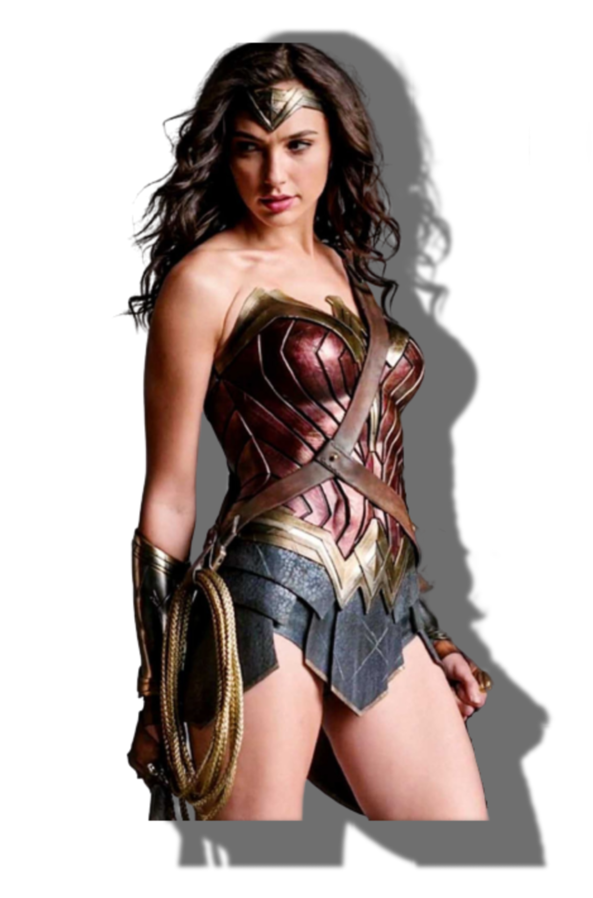

“Because no matter how small an act of kindness or generosity or simple positivity you put out into the world, it will make a difference.” - Wonder Woman
Wonder Woman tells the tale of Princess Diana of Themyscira. Her original origin story says she was formed out of clay by her mother, Hippolyta, and had life bestowed upon her by the Greek gods — making her the only Amazon not conceived by a man.
Wonder Woman is viewed as a feminist icon, though her appearance is just as noteworthy. Her red, white, and blue star-spangled suit is among her most striking characteristics — though her beauty does not serve to downplay her strength — as well as one of the most famous costumes in comic books ever. The famous getup includes gauntlets of Atlas which increases the strength of the wearer by ten — these sometimes cause Diana trouble when it comes to controlling the sudden increase in strength. Another item in her weaponry repertoire is the Lasso of Truth: a lasso which forces people to tell the truth; can restore memories; get rid of or cause illusions to those it holds; heal the holder of insanity, and protect those in close proximity from magical attacks. A non-combat version can also be used to change Diana’s clothing.
Her original story sees her leave behind her home on Paradise Island after an American pilot named Steve Trevor crash lands on Themyscira and the islanders compete to determine who will travel to the “Man’s World” to return him. Wonder Woman wins and also has the honor to act as an ambassador of the Amazons’ values on a mission of peace and diplomacy.
She grows up free of men on the Paradise Island where the Amazons teach her warrior skills as well as lessons of love and peaces. The gods also gift Diana with powers including strength, wisdom and courage, a hunter’s heart, beauty, sisterhood, speed and flight.
Due to the success of Gadot’s performance in Batman vs. Superman — which was viewed as the best part of the movie by many — she will star as the lead in 2017’s live-action solo film Wonder Woman and also in Justice League and its 2019 sequel with other DC characters including Batman, Superman, Aquaman, The Flash, Cyborg and more.